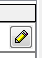
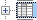
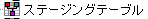
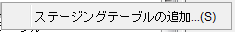
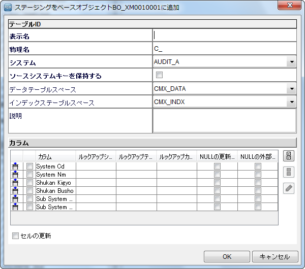
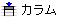
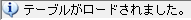

# -*- coding: utf-8 -*- import sys reload(sys) sys.setdefaultencoding('utf-8') def CREATESTG(): # テーブル名チェック click(Pattern().similar(0.81).targetOffset(-1,6)) type("c",Key.CTRL) num = Env.getClipboard() if num == BONAM: type(Key.ENTER) click(Pattern().similar(0.87).targetOffset(8,-1)) type(Key.RIGHT) type(Key.DOWN) # 「カラム」を開く rightClick(Pattern().similar(0.80)) click() # テーブル情報の入力 wait(, 30*60) paste(STNAM) type(Key.TAB) type(Key.TAB) type(Key.TAB) type(Key.TAB) type(Key.TAB) type(Key.TAB) paste(unicode(STEXP,"cp932")) click(Pattern().exact()) type(Key.TAB) type(Key.TAB) type(Key.ENTER) wait(10) # 保存 #click("save.png") #wait(10) click(Pattern().similar(0.90)) type(Key.LEFT) type(Key.LEFT) else: confexe = popAsk("Uuups,not match " + BONAM) if confexe == True: exit(1) # CSVファイルのインポート( import csv FILENAME = "C:\Program Files\SikuliX\STG_data_2.csv" f = open(FILENAME,"r") reader = csv.reader(f) STGLIST = [] for i in reader: STGLIST.append(i) else: for BONAM, STNAM, STEXP in STGLIST: type(Key.DOWN) wait(3) if exists(Pattern().exact()): print("start_A") type(Key.ENTER) type(Key.ENTER) type(Key.DOWN) CREATESTG() else: print("start_B") type(Key.ENTER) type(Key.ENTER) CREATESTG() else: print("ALL BO import finish")